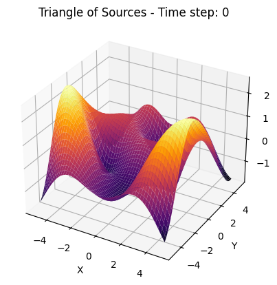

Problem 1
Interference Patterns on a Water Surface
1. Motivation
Interference occurs when multiple wave sources overlap in space and time, forming a new resultant wave pattern. On a water surface, this is observable as ripple patterns that vary in intensity depending on the positions and phases of the sources. This forms the basis of constructive interference (wave amplification) and destructive interference (wave cancellation).
Studying wave interference helps us understand key physics concepts like superposition, phase relationships, and wave propagation — relevant in fields ranging from acoustics and optics to quantum physics and antenna design.
2. Mathematical Foundations
2.1 Circular Wave from a Point Source
A point source located at \((x_0,y_0)\) emits a circular wave that propagates outward. The displacement \(\eta(x,y,t)\) of the water surface at a point \((x,y)\) and time \(t\) is given by:
$$ \eta(x,y,t) = \frac{A}{\sqrt{r}} \cos(kr - \omega t + \phi) $$ Where:
- \(A\): amplitude of the wave
- \(r = \sqrt{(x - x_0)^2 + (y - y_0)^2}\): distance from the source to the point
- \(k = \frac{2\pi}{\lambda}\): wave number
- \(\lambda\): wavelength
- \(\omega = 2\pi f\): angular frequency
- \(f\): frequency
- \(\phi\): initial phase of the wave

import numpy as np
import matplotlib.pyplot as plt
# Izgara oluştur
x = np.linspace(-50, 50, 500)
y = np.linspace(-50, 50, 500)
X, Y = np.meshgrid(x, y)
# Noktasal kaynaktan uzaklık (r)
r = np.sqrt(X**2 + Y**2)
# Dalga fonksiyonu
wave = np.sin(r)
# Grafik çizimi
plt.figure(figsize=(6, 6))
plt.imshow(wave, extent=[-50, 50, -50, 50], origin='lower', cmap='viridis')
plt.colorbar(label='Amplitude')
plt.title('Single Circular Wave from a Point Source')
plt.xlabel('x')
plt.ylabel('y')
plt.show()
```
### 2.2 Superposition of Multiple Waves
When there are $N$ point sources, each emitting coherent waves, the total displacement at a point $(x,y)$ is the **sum** of the displacements from each source:
$$
\eta_{\text{sum}}(x,y,t) = \sum_{i=1}^{N} \frac{A}{\sqrt{r_i}} \cos(kr_i - \omega t + \phi_i)
$$
Where each $r_i = \sqrt{(x - x_i)^2 + (y - y_i)^2}$ is the distance from the $i$-th source located at $(x_i, y_i)$, and $\phi_i$ is the initial phase of that source.
### 2.3 Source Geometry: Regular Polygon Configuration
To ensure symmetry and regular interference patterns, sources are placed at the vertices of a regular polygon with radius $R$ centered at the origin. The coordinates of the $i$-th source (for $N$ total sources) are:
$$
(x_i, y_i) = \left(R \cos\left(\frac{2\pi i}{N}\right), R \sin\left(\frac{2\pi i}{N}\right)\right), \quad i = 0, 1, \dots, N-1
$$
This configuration leads to symmetric and often beautiful interference patterns, especially when $N = 3$ (triangle), $N = 4$ (square), $N = 5$ (pentagon), etc.
## 3. Interference Analysis
### 3.1 Constructive Interference
Occurs when wave crests meet crests and troughs meet troughs, leading to amplification:
$$
\Delta\phi = 2\pi n, \quad n \in \mathbb{Z}
$$
### 3.2 Destructive Interference
### 3.1 Constructive Interference
Occurs when wave crests meet crests and troughs meet troughs, leading to amplification:
$$
\Delta\phi = 2\pi n, \quad n \in \mathbb{Z}
$$
### 3.2 Destructive Interference
Occurs when wave crests meet troughs, leading to cancellation:
$$
\Delta\phi = (2n + 1)\pi, \quad n \in \mathbb{Z}
$$
These conditions are crucial in analyzing the positions of **nodal lines** (destructive zones) and **antinodal lines**
(constructive zones).
---
# Moiré Wave Interference Visualization with interactive sliders

```python
import numpy as np
import matplotlib.pyplot as plt
from ipywidgets import interact, FloatSlider
# Grid
x = np.linspace(-10, 10, 600)
y = np.linspace(-10, 10, 600)
X, Y = np.meshgrid(x, y)
def moire_wave(theta1=0, theta2=30, k1=1.0, k2=1.05, phase=0.0):
# Dalga yönlerini radyana çevir
t1 = np.radians(theta1)
t2 = np.radians(theta2)
# İki düzlem dalgası tanımla
wave1 = np.cos(k1 * (X * np.cos(t1) + Y * np.sin(t1)))
wave2 = np.cos(k2 * (X * np.cos(t2) + Y * np.sin(t2)) + phase)
# Üst üste bindirme (interference)
result = wave1 + wave2
# Görselleştir
plt.figure(figsize=(8, 8))
plt.imshow(result, extent=[-10, 10, -10, 10], cmap='inferno', origin='lower')
plt.title('Moiré Interference Pattern')
plt.axis('off')
plt.tight_layout()
plt.show()
# Etkileşimli arayüz
interact(
moire_wave,
theta1=FloatSlider(min=0, max=180, step=1, value=0, description='Angle 1 (°)'),
theta2=FloatSlider(min=0, max=180, step=1, value=30, description='Angle 2 (°)'),
k1=FloatSlider(min=0.5, max=2.0, step=0.01, value=1.0, description='k1'),
k2=FloatSlider(min=0.5, max=2.0, step=0.01, value=1.05, description='k2'),
phase=FloatSlider(min=0.0, max=2*np.pi, step=0.1, value=0.0, description='Phase Δφ'),
)
Moiré Wave Interference Visualization
This Python code creates an interactive 2D visualization of moiré interference patterns formed by the superposition of two plane waves.
What it does:
• Simulates two waves traveling at different angles and wave numbers (k1, k2).
• The result of their interference is displayed as a moiré pattern — a visually striking pattern that looks 3D or holographic.
• Uses sliders (ipywidgets) to control:
• Angles of each wave
• Wave numbers (spatial frequency)
• Phase offset
⸻
Purpose:
To explore how small differences in wave direction and frequency create complex interference patterns — useful in optics, physics, and signal processing.
4. Parameters and Their Effects
| Parameter | Symbol | Effect on Pattern |
|---|---|---|
| Amplitude | \(A\) | Affects brightness/intensity of plot, not pattern shape |
| Wavelength | \(\lambda\) | Larger \(\lambda\) → wider fringes |
| Frequency | \(f\) | Affects speed of time-dependent animation, not pattern shape |
| Phase Offset | \(\phi\) | Can shift/interfere patterns asymmetrically |
| Number of Sources | \(N\) | More sources = richer, more complex patterns |
| Polygon Radius | \(R\) | Affects spacing and detail in the pattern |
| --- | ||
| # interference patterns on a water surface |
🎯 objective
Analyze the interference patterns formed on the water surface due to the superposition of waves emitted from point sources placed at the vertices of a chosen regular polygon.
steps to follow
1. select a regular polygon
We choose a regular polygon — for example: - equilateral triangle - square - regular pentagon
Let the polygon have \(N\) vertices (and hence \(N\) point sources), placed symmetrically around a circle of radius \(R\) centered at the origin.
Each vertex (source position) is given by: $$ \vec{r}_i = \left(R \cos\left(\theta_i\right), R \sin\left(\theta_i\right)\right), \quad \theta_i = \frac{2\pi(i-1)}{N}, \quad i = 1, 2, \dots, N $$
2. position the sources
We place point wave sources at these \(N\) vertices. All sources emit coherent circular waves with:
- same amplitude \(A\)
- same wavelength \(\lambda\)
- same frequency \(f\)
- same initial phase \(\phi = 0\)
3. wave equations
The wave emitted from the \(i\)-th source located at \(\vec{r}_i\) is described by:
Where: - \(\vec{r} = (x, y)\) is the observation point on the water surface - \(k = \dfrac{2\pi}{\lambda}\) is the wave number - \(\omega = 2\pi f\) is the angular frequency - \(|\vec{r} - \vec{r}_i|\) is the Euclidean distance between the observation point and source \(i\)
4. superposition of waves
By the principle of superposition, the total displacement at point \((x, y)\) and time \(t\) is:
This total wave function governs the interference pattern on the water surface.
Analyze interference patterns
We analyze \(\eta_{\text{sum}}(x, y, t)\) to find:
-
constructive interference:
When waves arrive in phase, amplifying displacement. -
destructive interference:
When waves arrive out of phase, leading to cancellation.
These patterns depend on the differences in distance from each point to the sources, and hence on the geometry of the polygon.

import numpy as np
import matplotlib.pyplot as plt
# Wave parameters
A = 1.0 # Amplitude
wavelength = 1.0 # Wavelength (lambda)
k = 2 * np.pi / wavelength # Wave number
f = 1.0 # Frequency
omega = 2 * np.pi * f # Angular frequency
phi = 0 # Phase
# Grid setup
x_range = y_range = 5.0
resolution = 500
x = np.linspace(-x_range, x_range, resolution)
y = np.linspace(-y_range, y_range, resolution)
X, Y = np.meshgrid(x, y)
# Time snapshot (can loop later for animation)
t = 0
# Polygon setup
N = 5 # Number of sources (e.g., 3 for triangle, 4 for square, 5 for pentagon)
R = 2.0 # Radius of polygon
# Source positions
angles = np.linspace(0, 2 * np.pi, N, endpoint=False)
sources = [(R * np.cos(a), R * np.sin(a)) for a in angles]
# Compute total wave field
eta_sum = np.zeros_like(X)
for (x0, y0) in sources:
r = np.sqrt((X - x0)**2 + (Y - y0)**2)
eta_i = A / np.sqrt(r + 1e-6) * np.cos(k * r - omega * t + phi)
eta_sum += eta_i
# Plotting
plt.figure(figsize=(8, 6))
plt.pcolormesh(X, Y, eta_sum, shading='auto', cmap='RdBu')
plt.colorbar(label='Wave Displacement')
plt.title(f'Interference Pattern from {N} Coherent Sources (Polygon)')
plt.xlabel('x')
plt.ylabel('y')
plt.gca().set_aspect('equal')
plt.grid(False)
plt.tight_layout()
plt.show()
Wave Interference Simulation
This code visualizes the interference pattern created by multiple circular wave sources arranged in a regular polygon.
⸻
🔧 What It Does
• Places N wave sources on a circle (polygon).
• Each source emits a circular wave.
• Uses the superposition principle to compute total wave displacement on a 2D grid.
• Plots the result as a color map showing constructive and destructive interference.
⸻
🧪 Key Parameters
• A: Amplitude
• λ: Wavelength
• f: Frequency
• N: Number of sources (e.g. 3 = triangle, 5 = pentagon)
• R: Radius of the polygon
• t: Time snapshot (static)
⸻
📊 Output
• A 2D plot of the wave interference pattern
• Shows how waves from multiple sources interact over space.
Interactive Wave Interference Simulation with Animation (with sliders)
import numpy as np
import matplotlib.pyplot as plt
from matplotlib import animation
from IPython.display import display, HTML, clear_output
import ipywidgets as widgets
import matplotlib as mpl
# Gömülecek maksimum animasyon boyutunu yükselt
mpl.rcParams['animation.embed_limit'] = 50_000_000
# Sabit grid
x = np.linspace(-10, 10, 200)
y = np.linspace(-10, 10, 200)
X, Y = np.meshgrid(x, y)
# Parametreleri tut
params = {
'A': 1.0,
'wavelength': 2.0,
'f': 1.0,
'phase_diff': 0.0,
'R': 3.0,
'N': 3
}
def compute_frame(t):
A = params['A']
wavelength = params['wavelength']
f = params['f']
phase_diff = params['phase_diff']
R = params['R']
N = int(params['N'])
k = 2 * np.pi / wavelength
omega = 2 * np.pi * f
eta_sum = np.zeros_like(X)
for i in range(N):
angle = 2 * np.pi * i / N
sx = R * np.cos(angle)
sy = R * np.sin(angle)
r = np.sqrt((X - sx)**2 + (Y - sy)**2)
phi = i * phase_diff
eta = A / np.sqrt(r + 0.1) * np.cos(k * r - omega * t + phi)
eta_sum += eta
return eta_sum
# Animasyon oluşturma fonksiyonu
def create_animation():
fig, ax = plt.subplots(figsize=(6, 6))
img = ax.imshow(np.zeros_like(X), extent=[-10, 10, -10, 10], cmap='viridis', origin='lower')
cb = plt.colorbar(img, ax=ax)
ax.set_title('Interference Pattern')
def update(frame):
eta = compute_frame(frame / 10.0)
img.set_data(eta)
return [img]
ani = animation.FuncAnimation(fig, update, frames=100, interval=50, blit=True)
plt.close()
return HTML(ani.to_jshtml())
# Widgetlar
A_slider = widgets.FloatSlider(value=1.0, min=0.1, max=5.0, step=0.1, description='Amplitude')
wavelength_slider = widgets.FloatSlider(value=2.0, min=0.5, max=10.0, step=0.1, description='Wavelength')
f_slider = widgets.FloatSlider(value=1.0, min=0.1, max=5.0, step=0.1, description='Frequency')
phase_slider = widgets.FloatSlider(value=0.0, min=0.0, max=2*np.pi, step=0.1, description='Phase Δφ')
R_slider = widgets.FloatSlider(value=3.0, min=1.0, max=10.0, step=0.5, description='Radius R')
N_slider = widgets.IntSlider(value=3, min=2, max=10, step=1, description='Sources N')
sliders = [A_slider, wavelength_slider, f_slider, phase_slider, R_slider, N_slider]
# Her değişiklikte animasyonu yenile
output = widgets.Output()
def on_slider_change(change):
# Güncel değerleri al
params['A'] = A_slider.value
params['wavelength'] = wavelength_slider.value
params['f'] = f_slider.value
params['phase_diff'] = phase_slider.value
params['R'] = R_slider.value
params['N'] = N_slider.value
with output:
clear_output(wait=True)
display(create_animation())
for s in sliders:
s.observe(on_slider_change, names='value')
# İlk gösterim
on_slider_change(None)
# Tüm arayüz
controls = widgets.VBox(sliders)
display(widgets.HBox([controls, output]))
Description:
This Python code creates an interactive and animated simulation of wave interference, designed to run inside a Jupyter Notebook or Google Colab environment.
🔧 What It Does:
• Simulates circular waves emitted from multiple sources arranged in a regular polygon (triangle, square, pentagon, etc.).
• Calculates the resulting interference pattern by summing all wave contributions over a 2D grid using the superposition principle.
• Uses matplotlib.animation to generate a looping animation of the wave field over time.
• Displays an interactive control panel (sliders) using ipywidgets to let users change key parameters in real-time:
• Amplitude (A)
• Wavelength (λ)
• Frequency (f)
• Phase Difference (Δφ)
• Polygon Radius (R)
• Number of Sources (N)
🖼 Output:
• Left: Interactive sliders for adjusting parameters.
• Right: Real-time animated heatmap showing the interference pattern evolving over time.
• The color pattern represents wave peaks and troughs, showing constructive and destructive interference zones.